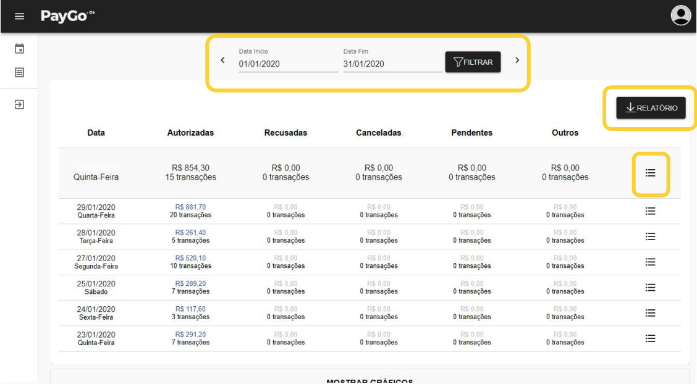
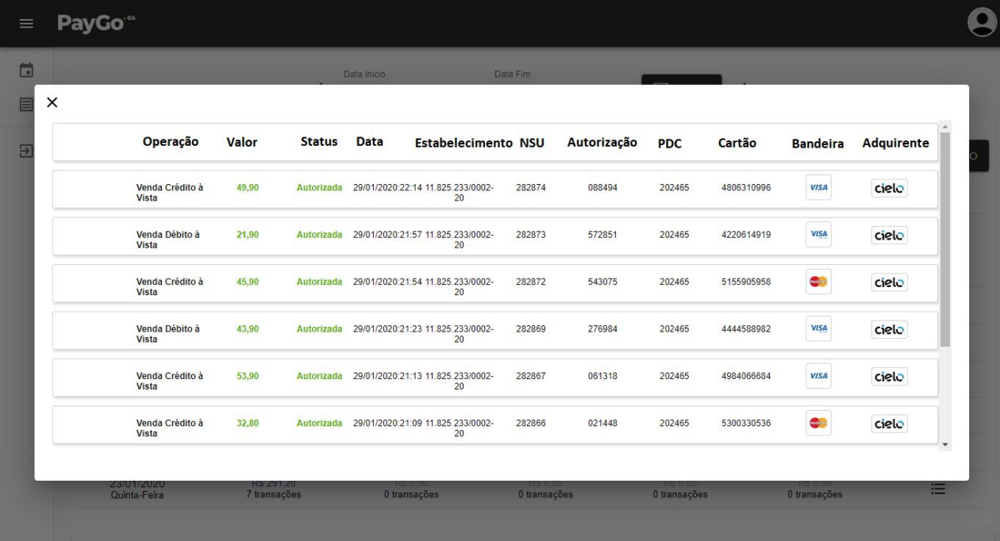
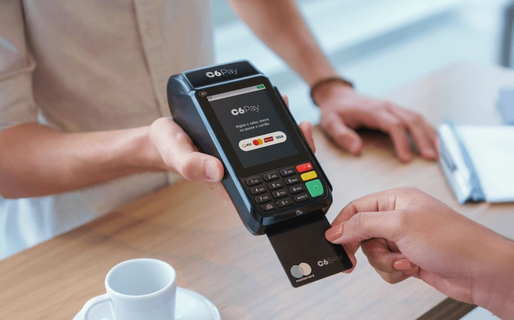
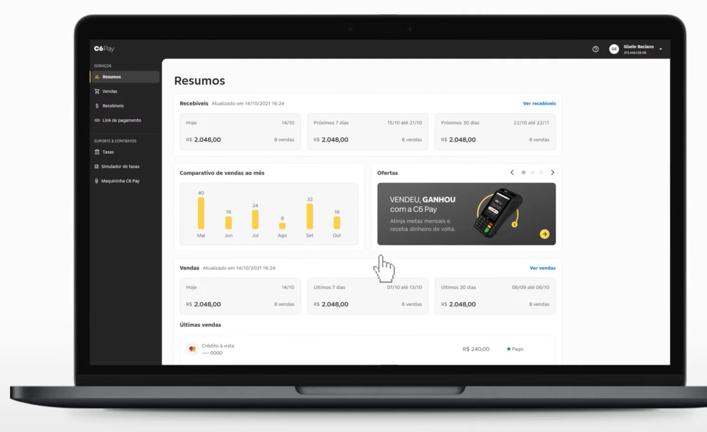
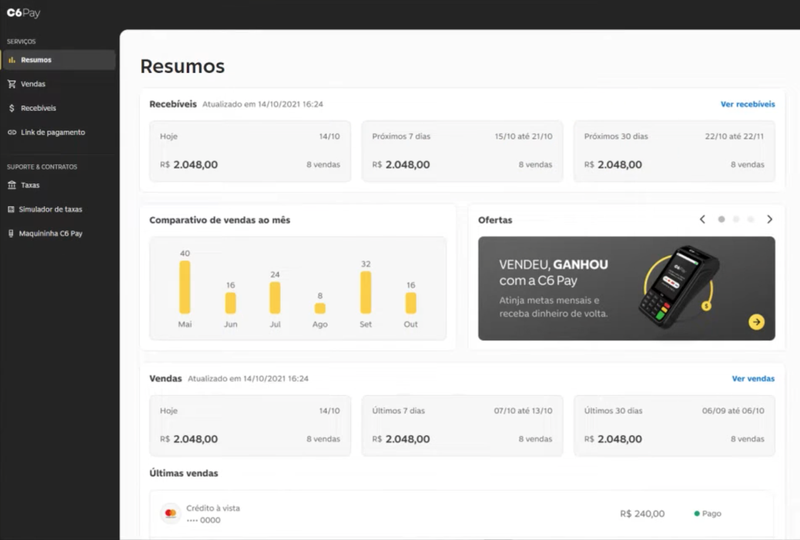
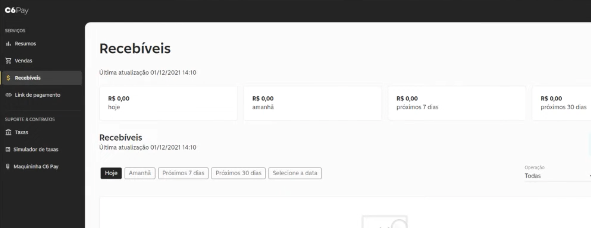

PayGo · C6 Bank · 2020–2021
Portal de gestão para lojistas C6 Pay
O portal que os lojistas usavam carregava a identidade visual e a arquitetura da PayGo, sem traços do C6 Bank. O redesenho reposicionou a plataforma dentro do ecossistema do banco e reorganizou as informações para que o usuário conseguisse entender a própria operação financeira, superando o modelo antigo que apenas expunha dados brutos do sistema.
- Plataforma
- Web · portal B2B
- Equipe
- 1 PO · 4 engenheiros · design system C6
- Contribuição
- Designer de produto
- Escopo
- Pesquisa · UX · interface · design system
Uma operação B2B complexa entre a PayGo e o C6 Bank
O produto original operava como um sistema de consulta rígido, exibindo dados brutos de backoffice formatados para engenharia e distantes da realidade financeira de quem gerencia um negócio. Como eu era o único designer alocado no produto, meu desafio foi desenhar a transição completa dessa interface para o ecossistema do C6 Bank, redesenhando a arquitetura de informação do portal para aproximar a plataforma da rotina real dos nossos lojistas.


Alinhamento entre design e engenharia
Antes de desenhar a solução, trabalhei com a engenharia para entender como os dados chegavam ao portal e quais eram as limitações do sistema legado. Esse alinhamento definiu o que fazia sentido evoluir na interface.
O desafio não era trazer mais informações, mas facilitar a leitura das que já existiam. A partir disso, definimos duas prioridades para o redesenho.
O gargalo do fechamento de caixa
Descobrimos que muitos lojistas ainda faziam o fechamento de caixa somando valores manualmente. Esse passou a ser o principal problema a resolver e orientou as decisões de design ao longo do projeto.
Priorização das informações
Também percebemos que, na rotina do balcão, o mais importante era entender rapidamente a situação financeira do dia. Em vez de destacar tabelas e filtros, organizamos a interface para dar prioridade às informações essenciais.

A tradução de dados de engenharia em blocos de saúde financeira
O modelo mental de consolidação
Substituí a tabela engessada que exigia contas manuais por painéis horizontais rápidos inspirados em referências de mercado como Stone e Stripe. Essa abordagem transformou dados brutos em cartões de diagnóstico, permitindo que o comerciante bata o olho e entenda a saúde financeira do negócio instantaneamente.
A inversão da hierarquia visual
Organizei a interface com foco na rotina de quem opera atrás de um balcão, dividindo a tela em duas linhas paralelas. Posicionei os recebíveis na faixa superior para garantir previsibilidade sobre o dinheiro futuro e alinhei as vendas logo abaixo, trazendo os dados de fechamento diário para o primeiro plano.
Taxonomia e tradução de dados
Simplifiquei a linguagem técnica herdada dos sistemas de engenharia eliminando códigos confusos como NSU e PDC da tela principal. Traduzi esses dados para o vocabulário real de balcão, transformando registros complexos de sistemas em status claros de pagamento com identificação visual de bandeiras.

A autonomia do lojista no fechamento de caixa diário
Na aba de vendas e resumos, concentrei os esforços de interface em eliminar os modais e os cliques intermediários que fragmentavam a experiência antiga. Implementei um sistema de filtros inline posicionados diretamente acima da tabela de transações, permitindo buscas dinâmicas por períodos específicos, status de liquidação e bandeiras de cartão.
Essa reestruturação da interface deu ao comerciante a capacidade de realizar a conciliação diária de forma independente e sem fricção visual, transformando um processo que antes levava minutos em uma checagem rápida realizada diretamente na dobra principal da tela.

Integração de serviços financeiros ao portal
Com uma visão dos próximos recebimentos, o lojista conseguia planejar melhor o caixa. Foi nesse mesmo contexto que incorporamos ofertas de antecipação de recebíveis e crédito do C6 Bank, aproveitando uma necessidade que já fazia parte da rotina de uso do portal.

A segurança técnica gerada pela resposta do usuário
Como o time de engenharia atuava de forma paralela construindo entregas incrementais, a apresentação de uma interface totalmente reformulada gerou um receio natural a respeito do esforço de desenvolvimento. Para desarmar essa resistência e validar o projeto, levei o protótipo de alta fidelidade do Figma para testes de usabilidade com os lojistas na ponta da operação. Ver a facilidade de uso e a satisfação dos comerciantes ao realizarem o fechamento de caixa de forma autônoma eliminou as desconfianças técnicas, dando ao time de engenharia a clareza necessária para iniciar a construção da nova plataforma.
Redução de suporte e autonomia no desenvolvimento
Depois que o portal entrou em produção, as dúvidas sobre fechamento de caixa praticamente desapareceram do suporte. Para entender se a mudança também aparecia no comportamento dos usuários, analisei o GA junto com a PO. O tempo médio na tela de vendas caiu quase pela metade e o acesso aos relatórios aumentou. Em paralelo, adaptamos os componentes do design system do C6 às limitações técnicas da PayGo e estruturagem uma biblioteca própria para que a squad pudesse evoluir o produto com mais consistência.